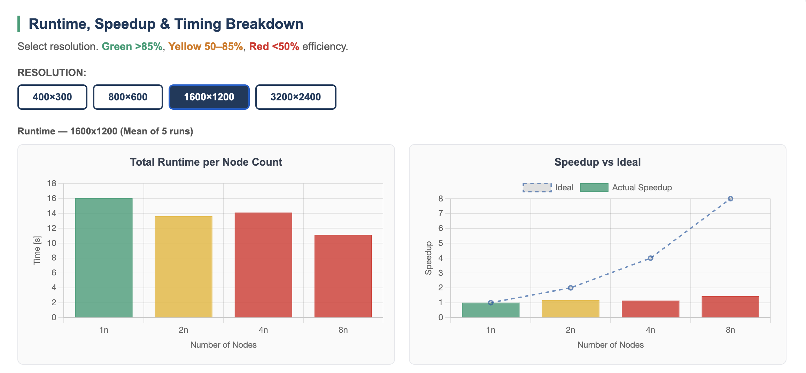
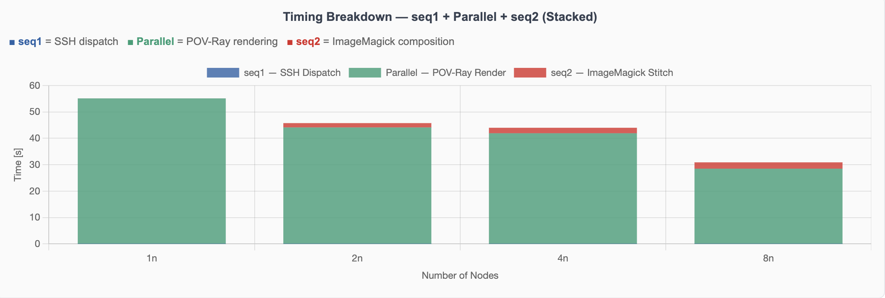
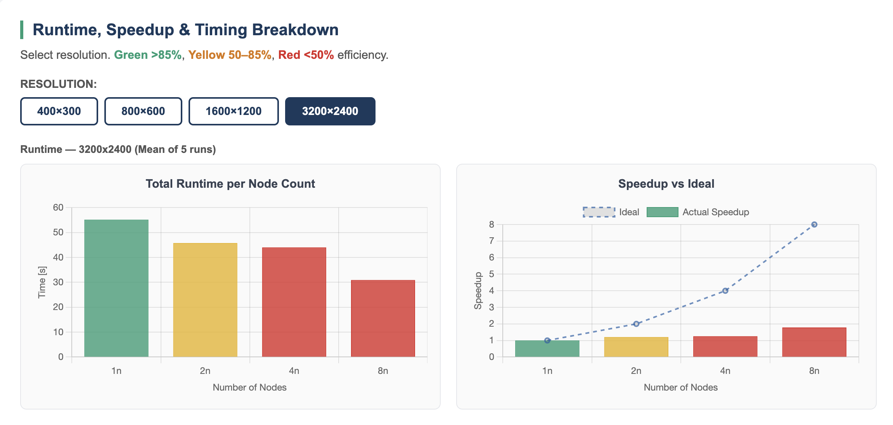

Demonstrating Amdahl's Law and Gustafson's Law using Prof. Baun's own Task Distributor tool with POV-Ray ray-tracing — without MPI.
Task Distributor is a non-MPI parallel tool written by Prof. Dr. Christian Baun (published in SpringerPlus 2016, DOI: 10.1186/s40064-016-2254-x). It distributes a POV-Ray ray-tracing render job across multiple nodes using SSH — each node renders an equal horizontal band of rows and writes its result to a shared NFS path. The master node polls a shared lockfile and stitches all parts together with ImageMagick.
Unlike MPI which launches all processes simultaneously via mpirun,
Task Distributor dispatches jobs sequentially via SSH and checks completion
sequentially — making the coordination itself a measurable serial fraction,
exactly what Amdahl's Law predicts.
Task Distributor is architecturally node-based by design — it dispatches one POV-Ray
process per node via SSH. The tool's own README and -n flag explicitly say
"number of nodes". This matches Prof. Baun's own published methodology where he used
1, 2, 4, 8 nodes. We followed the same approach.
Task Distributor explicitly reports three timing components per run. This makes the serial and parallel fractions directly measurable — a perfect Amdahl's Law demonstration.
Required time to process the 1st sequential part: 0.003s ← SSH dispatch (fixed) Required time to process the parallel part: 55.134s ← POV-Ray render (scales) Required time to process the 2nd sequential part: 0.012s ← ImageMagick stitch (grows)
We tested a ladder of resolutions from small to large to show the progression from poor scaling (small problem, overhead dominates) to better scaling (large problem, compute dominates) — directly demonstrating Amdahl's and Gustafson's Laws.
POV-Ray writes intermediate .pov-state files to /tmp during rendering.
At 4800×3600 this requires more than 453MB — exceeding Pi3's tmpfs limit (half of 1GB RAM).
Confirmed independently by another student group in the same course.
Maximum feasible resolution: 3200×2400.
# Stop k3s-agent for ip in 10.10.10.21 10.10.10.22 10.10.10.23 10.10.10.24 \ 10.10.10.25 10.10.10.26 10.10.10.27 10.10.10.28; do ssh admin@$ip "sudo systemctl stop k3s-agent" & done wait # Mount shared NFS (required for lockfile and image parts) for ip in 10.10.10.21 10.10.10.22 10.10.10.23 10.10.10.24 \ 10.10.10.25 10.10.10.26 10.10.10.27 10.10.10.28; do ssh admin@$ip "sudo mkdir -p /nfs/shared && \ sudo mount -t nfs 10.10.10.1:/nfs/shared /nfs/shared" & done wait
# Always clean lockfile and old image parts before running rm -f /nfs/shared/povray/lockfile rm -f /nfs/shared/povray/*.png rm -f /tmp/output_*.png # Also clean tmp on all Pi3 nodes for ip in 10.10.10.21 10.10.10.22 10.10.10.23 10.10.10.24 \ 10.10.10.25 10.10.10.26 10.10.10.27 10.10.10.28; do ssh admin@$ip "rm -f /tmp/benchmark*.png /tmp/pov-state* /tmp/pov*" & done wait
# Replace <NODES> with: 1, 2, 4, or 8 # Replace <WIDTH> x <HEIGHT> with resolution: # 400x300 | 800x600 | 1600x1200 | 3200x2400 cd ~/task-distributor ./task-distributor-master.sh \ -n <NODES> \ -x <WIDTH> \ -y <HEIGHT> \ -p /nfs/shared/povray \ -f -c # Example: 4 nodes, 1600x1200 ./task-distributor-master.sh -n 4 -x 1600 -y 1200 -p /nfs/shared/povray -f -c # Flags: # -n number of nodes # -x image width # -y image height # -p path for lockfile and image parts (must be NFS) # -f force (overwrite existing lockfile) # -c cleanup after (remove image parts)
Full results with timing breakdown (seq1, parallel, seq2) per resolution and node count are on the Results page.



At 400×300 — 8 nodes is consistently SLOWER than 1 node. Render time per node is ~0.05s but SSH dispatch + sequential lockfile checking takes ~3s fixed. The serial fraction completely dominates. This is the clearest Amdahl's Law demonstration in our benchmarks.
At 3200×2400 — 1 node baseline is 55s, 8 nodes achieves 28.5s (1.93× speedup). Render time per node (~7s) now significantly exceeds coordination overhead, so compute dominates. Increasing the problem size pushed the parallelization limit.
The master script checks node completion sequentially — it waits for node 1, then node 2, etc. This means even if all nodes finish simultaneously, the master processes them one by one. This architectural serial fraction caps the maximum achievable speedup regardless of how large the render job is.
MPI's mpirun launches all processes simultaneously and collects results in parallel.
Task Distributor's sequential SSH dispatch is fundamentally different.
This is why Monte Carlo Pi achieves 16.2× at 32 cores while Task Distributor
achieves only 1.93× at 8 nodes — the coordination mechanism matters as much as the hardware.